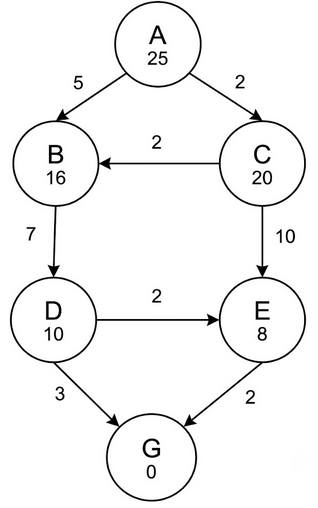
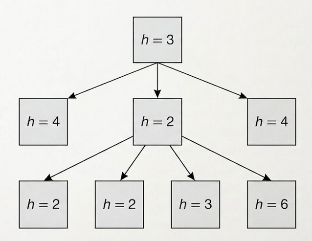
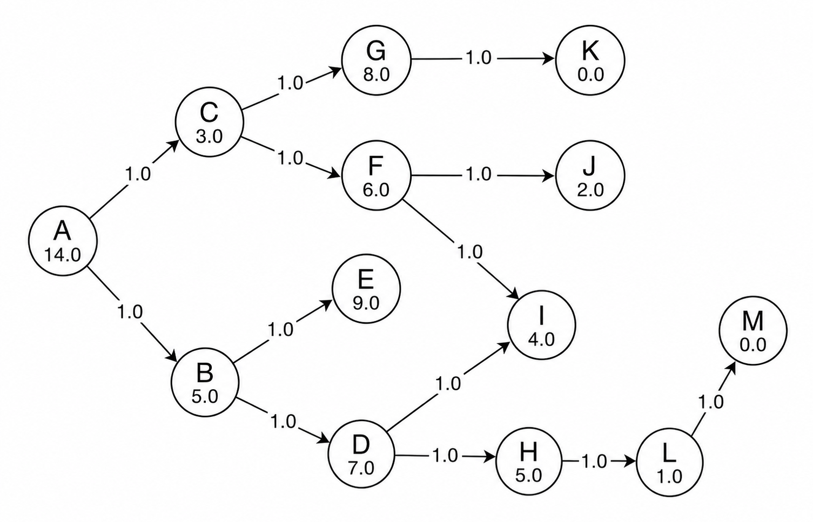

Resolución de Ejercicios
Desglose paso a paso de problemas reales de convocatorias anteriores. Aprende a aplicar la teoría, reconoce los patrones del examinador y asegura la máxima puntuación en la parte práctica de Sistemas Inteligentes.
📊 1. CLASIFICACIÓN DE EJERCICIOS
Tras diseccionar los 5 exámenes oficiales, los problemas prácticos de Sistemas Inteligentes se dividen en 9 grandes tipos.
Tipo A: Traza de algoritmo de búsqueda sobre grafo
Qué se pide: Dado un grafo con nodos (letra + valor h) y aristas (coste), aplicar un algoritmo (A*, Avara, UCS, IDS) y determinar: el camino solución, el coste total, la configuración de la frontera o qué nodos se expanden.
Para A* en grafo, se descarta la reapertura de nodos cerrados aunque se encuentre un camino mejor (si la heurística no es consistente). El camino óptimo de A* ≠ camino de avara.
Tipo B: Verificación de admisibilidad y consistencia
Qué se pide: Dado el grafo, comprobar si h(n) ≤ h*(n) (admisibilidad) y si h(n) ≤ c(n,n') + h(n') para cada arista (consistencia). Concluir si A* garantiza el óptimo.
Basta encontrar UNA arista que viole la desigualdad para demostrar inconsistencia. La admisibilidad se viola si para algún nodo h(n) > coste real al destino.
Tipo C: Identificación de algoritmo por tabla de explorados
Qué se pide: Dada la secuencia de nodos extraídos de la frontera, deducir qué algoritmo produjo esa traza (BFS, UCS, DFS).
UCS puede dar la misma secuencia que BFS si todos los costes son iguales. La diferencia está en si extrae por coste o por orden de inserción.
Tipo D: Encadenamiento progresivo con reglas
Qué se pide: Dada una memoria activa inicial y reglas IF-THEN, trazar el ciclo de inferencia paso a paso hasta inferir la hipótesis objetivo.
El orden de aplicación importa: si dos reglas se activan simultáneamente, se aplica la de mayor prioridad. Los hechos nuevos activan reglas que antes no disparaban.
Tipo E: Construcción de BLE y BLR + Inferencia
Qué se pide: Construir la BLE, aplicar las reglas categóricas para eliminar columnas y obtener la BLR. Luego inferir interpretaciones a partir de manifestaciones dadas.
Una regla 'A → B' falla SOLAMENTE cuando A=1 y B=0. Si A=0, la regla se cumple automáticamente independientemente de B. La BLR puede quedar vacía.
Tipo F: Corrección bayesiana sobre BLR
Qué se pide: Dado el resultado del modelo categórico (BLR), aplicar P(m|i) y P(i) a priori para calcular P(i|m) y determinar la interpretación más probable mediante Bayes.
Cuando el modelo categórico deja solo una interpretación posible, aplicar Bayes es inútil: la respuesta ya está determinada por exclusión.
Tipo G: Tamaño BLE/BLR y espacio de estados
Qué se pide: Con M manifestaciones e I interpretaciones, calcular el tamaño de la BLE = 2^(M+I). Calcular complejos que sobreviven (BLR).
El tamaño de la BLE no es M×I sino 2^M × 2^I (todas las combinaciones binarias posibles).
Tipo H: Probabilidad en Computación Evolutiva (AG)
Qué se pide: Dado el tamaño de población y tasa de mutación/cruce, calcular individuos afectados (o viceversa).
La tasa de mutación es por individuo, no por gen. Si Pm=0.1 y hay 1000 individuos, se esperan 100 mutados.
Tipo I: Análisis de árbol de Programación Genética
Qué se pide: Identificar nodos terminales (hojas), no terminales (operadores), profundidad máxima y comprobar si está equilibrado.
Los terminales son las HOJAS (tanto variables como constantes). Los no terminales son siempre los OPERADORES. La profundidad suele contarse desde nivel 0 o 1.
🛠️ 2. MÉTODO GENERAL DE RESOLUCIÓN (Recetas)
Receta A: Traza de búsqueda sobre grafo
Inicializar: Frontera = {nodo_inicial(f=g+h)}. Cerrados = {}. Para IDS: límite = 0.
Extraer: El nodo de menor f (A*), menor h (Avara), menor g (UCS) o FIFO/LIFO según el algoritmo. Moverlo a Cerrados.
Expandir: Para cada sucesor: f = g(actual) + coste_arista + h(sucesor). Si ya está en Cerrados → descartar. Si ya está en Frontera con mayor f → actualizar.
Meta: Si el nodo extraído es la meta → reconstruir camino hacia atrás por los nodos padre.
Registrar: En cada paso: Frontera: [nodo(f=X), nodo(f=Y)] ordenado de menor a mayor. Cerrados: {A, B, ...}
Receta B: Verificación de admisibilidad y consistencia
Admisibilidad: Para cada nodo n, calcular h*(n) = coste real del camino óptimo desde n hasta la meta. Verificar h(n) ≤ h*(n). Un solo nodo donde h > h* → NO admisible.
Consistencia: Para cada arista n → n' con coste c(n,n'), verificar:
Una sola arista que lo viole → NO consistente.
Conclusión: Consistente ⟹ Admisible (pero no al revés). Si inconsistente: A* en grafo puede no devolver el óptimo.
Receta C: Identificación de algoritmo por traza
¿Va nivel a nivel en orden alfabético? → BFS (cola FIFO, explora por capas horizontales).
¿El orden sigue el menor coste g acumulado? → UCS (cola de prioridad por g).
¿Se sumerge siempre en la rama más profunda? → DFS (pila LIFO, nunca vuelve hasta agotar la rama).
Receta D: Encadenamiento progresivo (Forward Chaining)
Estado inicial: Memoria Activa (MA) = hechos dados en el enunciado.
Emparejamiento: Buscar todas las reglas cuyas premisas estén completamente en MA → forman el Conjunto Conflicto.
Resolución de conflicto: Elegir la regla de mayor prioridad (o la primera, según el criterio del enunciado).
Acción: Añadir el consecuente de la regla a MA. Volver al paso 2 y repetir hasta inferir la hipótesis objetivo o agotar reglas.
Receta E: Construcción de BLE y BLR
BLE: Con M manifestaciones e I interpretaciones, generar todas las combinaciones binarias posibles.
Aplicar reglas: Para cada regla A → B, evaluar columna a columna. La columna se elimina si y solo si A=1 y B=0. Si A=0, la regla se cumple automáticamente.
BLR: Las columnas que sobreviven tras aplicar todas las reglas forman la Base Lógica Reducida.
Inferencia: Dado un patrón de manifestaciones observado, buscar en la BLR las columnas donde coincida. Las interpretaciones de esas columnas son las compatibles.
A → B falla únicamente cuando A=1 y B=0. Si A=0, la regla es verdadera sin importar B. La BLR puede quedar vacía si las reglas son muy restrictivas.Receta F: Corrección bayesiana
Aplicabilidad: Solo si la BLR deja varias interpretaciones compatibles. Si queda una sola, ya está — Bayes es innecesario.
Verosimilitud: Para cada interpretación superviviente $i_k$:
Conjunta: Calcular $P(m_{obs} \mid i_k) \cdot P(i_k)$ para cada interpretación.
Normalizar: Dividir cada conjunta entre la suma de todas → obtener $P(i_k \mid m_{obs})$. La mayor es la interpretación más probable.
Receta G: Tamaño BLE y espacio de estados
Tamaño BLE con M manifestaciones e I interpretaciones:
Espacio de estados STRIPS con N variables booleanas:
Complejos BLR: Evaluar la BLE aplicando todas las reglas y contar las columnas supervivientes.
Receta H: Probabilidades en AG
Receta I: Análisis de árbol GP
Terminales (hojas): Todos los nodos sin hijos — variables y constantes.
No terminales (operadores): Todos los nodos con al menos un hijo — funciones matemáticas o lógicas.
Profundidad: Raíz = nivel 0 (o 1 si el enunciado lo indica). Profundidad máxima = nivel de la hoja más profunda.
Equilibrio: Un árbol está equilibrado si todas las hojas están al mismo nivel (o difieren a lo sumo en 1).
📝 3. RESOLUCIÓN DE EXÁMENES OFICIALES
Tema 2: Búsqueda y Exploración
Examen SI 2023 | Preguntas P1-3. [Tipo A: A* sobre grafo1]
Dado el siguiente grafo, en donde (i) el nodo inicial es $A$ y el nodo meta es $G$, (ii) el valor numérico dentro de cada nodo indica el resultado de evaluar una función heurística $h$, y (iii) el valor numérico en cada arista indica el coste de transición entre los diferentes estados:

Aplicando el algoritmo A* basado en grafo, en algún paso, los nodos de la frontera vendrán dispuestos según la siguiente configuración (considerar precedencia izq a drch, que el número entre paréntesis representa el correspondiente valor $f$, $f=h+g$, y que en caso de empate en valor $f$, la precedencia de expansión vendrá dada por el orden alfabético de los nodos correspondientes):
Realizamos la traza paso a paso usando la ecuación $f(n) = g(n) + h(n)$:
1. Paso 1: Se expande el inicial $A$.
- Genera $B$ ($g=5, h=16 \rightarrow f=21$) y $C$ ($g=2, h=20 \rightarrow f=22$).
- Frontera: `[B(21), C(22)]`. Cerrados: `{A}`.
2. Paso 2: Se expande $B$ (por tener el menor valor $f$).
- Genera $D$ ($g=5+7=12, h=10 \rightarrow f=22$).
- Frontera: `[C(22), D(22)]` (por empate $f$, orden alfabético). Cerrados: `{A, B}`.
3. Paso 3: Se expande $C$.
- Genera $E$ ($g=2+10=12, h=8 \rightarrow f=20$).
- También encuentra una nueva ruta hacia $B$ con menor coste ($g=2+2=4 \rightarrow f=20$).
- Punto clave: Como estamos en búsqueda sobre grafo, el algoritmo comprueba si el nodo $B$ ya ha sido expandido.
Como $B$ ya está en la lista de Cerrados `{A, B}`, la nueva ruta hacia él se descarta y el nodo no se reabre.
- Frontera resultante: Tras añadir solo $E$, la frontera queda conformada por el nuevo nodo $E$ y el nodo $D$ que ya estaba esperando: `[E(20), D(22)]`.
Esta configuración coincide exactamente con la opción a.
En el mismo problema de la pregunta 1, ¿obtiene el algoritmo A* una solución óptima?
Una heurística es admisible si nunca sobreestima el coste real hacia la meta.
Si observamos el grafo del ejercicio, desde el nodo $E$ hasta la meta $G$ el coste real es de $2$, pero su estimación heurística marca $h(E) = 8$. Como $8 > 2$, la heurística sobreestima flagrantemente el coste y no es admisible (y por consiguiente, tampoco es consistente).
Prueba adicional de que no es consistente (de A a C):
Una heurística es consistente si el coste estimado desde un nodo a la meta no es mayor que el coste de dar un salto físico hacia su vecino más la estimación de dicho vecino.
La inecuación matemática que debes aplicar siempre es: $h(n)≤c(n,n′)+h(n′)$.
Para saber si C cumple la regla, calculamos lo mismo de siempre
- La estimación dentro del nodo A es h(A)=25.
- El coste de la flecha para viajar de A hacia C es c(A,C)=2.
- La estimación dentro del nodo C es h(C)=20.
- El cálculo: Sustituimos los números en la inecuación: ¿Es 25≤2+20? Es decir, ¿Es 25≤22? No, la inecuación es falsa porque 25 es mayor que 22.
A pesar de esto, si ejecutamos el algoritmo paso a paso, A acaba encontrando la ruta óptima de coste 14. Al lograrlo con una heurística que rompe las reglas teóricas, lo hace estrictamente "de casualidad". (Nota: Descarta plantillas libres que marquen la opción 'c', ya que matemáticamente la heurística es inadmisible).
En el mismo problema de la pregunta 1, indica la secuencia del camino devuelto utilizando, esta vez, la búsqueda avara:
Ejecutando el recorrido:
1. Desde $A$, se abren los caminos hacia $B$ ($h=16$) y $C$ ($h=20$). Como $16 < 20$, la búsqueda avara elige $B$.
2. Desde $B$, se abre el camino a $D$ ($h=10$). Elige $D$.
3. Desde $D$, se abren caminos a $E$ ($h=8$) y $G$ ($h=0$). Elige la meta $G$.
El camino devuelto ciegamente es A $\rightarrow$ B $\rightarrow$ D $\rightarrow$ G. (Nota: Las plantillas no oficiales de Wuolah indican la opción C, pero ese es el camino que devuelve A, no la búsqueda avara).
Examen SI 2023 | Preguntas P4. [Tipo A: Búsqueda Avara sobre grafo1]
En la búsqueda de coste uniforme:
- La a) es falsa, los operadores pueden (y suelen) tener costes distintos.
- La b) es falsa/ambigua: el algoritmo devolverá el camino de coste mínimo, no significa que todos los caminos imaginables del grafo midan lo mismo.
- Las c) y d) son falsas porque la optimización por pasos (mínimo número de saltos) es característica exclusiva de la Búsqueda en Amplitud (BFS), no de UCS. Por ello, la opción e) es la única lógicamente rigurosa.
Examen SI 2023 | Preguntas P6. [Tipo A especial: Hill-Climbing y arbol1]
En el contexto del algoritmo de escalada en búsqueda local, el siguiente árbol de búsqueda se corresponde con una situación de:

A diferencia de A* o Búsqueda en Anchura, el algoritmo de Escalada Simple (Hill-Climbing) pertenece a la familia de métodos de Búsqueda Local.
La característica teórica definitoria de esta familia es que no conservan ni generan un "árbol de búsqueda" en memoria (operan sin historial). Solamente guardan el "estado actual" y evalúan a sus vecinos inmediatos para decidir el siguiente paso.
Por lo tanto, es algorítmica y estructuralmente imposible que Hill-Climbing produzca la representación de un árbol de exploración.
Examen SI 2024 | Preguntas P1-2. [Tipo A+B: Búsqueda avara + A* sobre grafo]
El algoritmo evalúa los nodos de la frontera expandiendo siempre aquel que parece estar más cerca de la meta guiándose en exclusiva por el menor valor de la función heurística $h(n)$. Para resolver este tipo de preguntas visuales, se debe recorrer el grafo ciegamente hacia el nodo adyacente con menor $h(n)$ (ignorando el coste real $g(n)$ durante la toma de decisiones), pero, al llegar a la meta, se suman los costes de los arcos transitados ($g(n)$) para dar la longitud del camino real.
_(Enunciado reconstruido teóricamente debido a la ausencia del grafo original)_
En un problema que aplica la Búsqueda Avara sobre un grafo, la pregunta final exige calcular la "longitud del camino" de la solución obtenida.
¿Cómo se determina dicha longitud?
En las Redes Neuronales Artificiales (RNA), la huella del aprendizaje —la retención de la generalización del problema— reside intrínseca y exclusivamente en el valor paramétrico de la intensidad de sus conexiones sinápticas (los pesos) y en el de los niveles de activación base de la célula (los bias).
En una RNA, el conocimiento está en...
El "conjunto de entrenamiento" (Training set) es el único lote de datos que interactúa de manera directa con el algoritmo (por ejemplo, retropropagación) calculando los gradientes de error para actualizar y asentar matemáticamente las matrices de pesos y bias de la red.
El conjunto de datos utilizado para establecer el valor de los pesos de una RNA es conocido como...
Examen SI 2024 | Preguntas P4. [Tipo C: Identificación de algoritmo por tabla]
A partir de la siguiente tabla de nodos explorados, ¿qué tipo de búsqueda fue utilizada?
Paso 1: -
Paso 2: A
Paso 3: A, B
Paso 4: A, B, C
Paso 5: A, B, C, D
Paso 6: A, B, C, D, E
horizontales: primero el nivel 0, luego todo el nivel 1, luego todo el nivel 2.
- Paso 1: `-` (Frontera: [A])
- Paso 2: `A` (Frontera: [B, C]) -> Explora todo el nivel 0.
- Paso 3: `A, B` (Frontera: [C, D, E]) -> Empieza el nivel 1. Saca a B porque entró antes que C.
- Paso 4: `A, B, C` (Frontera: [D, E, F, G]) -> Termina el nivel 1.
- Paso 5: `A, B, C, D` (Frontera: [E, F, G, H, I]) -> Empieza el nivel 2.
- Paso 6: `A, B, C, D, E` (Frontera: ...)
Como ves, esta traza coincide exactamente al milímetro con la tabla de tu enunciado.
La búsqueda en anchura es la que genera una lista alfabética secuencial perfecta si el árbol está ordenado así.
2. Búsqueda en Profundidad
Utiliza una pila LIFO (el último que entra a la frontera, es el primero en salir). Esto obliga al algoritmo a ignorar a los hermanos y sumergirse ciegamente por una rama hasta chocar con el fondo.
- Paso 1: `-` (Frontera: [A])
- Paso 2: `A` (Frontera: [B, C])
- Paso 3: `A, B` (Frontera: [D, E, C]) -> Al explorar B, descubre D y E. Al ser LIFO, estos se ponen "encima" de C.
- Paso 4: `A, B, D` (Frontera: [H, I, E, C]) -> ¡Aquí se rompe la secuencia! El algoritmo ignora a C y explora D (el hijo de B) porque está yendo hacia lo profundo.
- Paso 5: `A, B, D, H` (Frontera: ...)
En profundidad, jamás verías los explorados `A, B, C, D, E`, porque eso implicaría haber explorado a `B` y a su hermano `C` antes de bajar a los hijos, lo cual viola la regla de ir hacia abajo.
3. Búsqueda de Coste Uniforme y A*
En estos algoritmos, el orden de los nodos explorados no sigue un patrón alfabético ni de capas predecible a simple vista, ya que la frontera se ordena por números (por el coste más barato g(n) o por la fórmula f(n)).
- Dependiendo de los costes de las flechas, la tabla de explorados daría saltos ilógicos como: `A`, luego `A, C`, luego `A, C, B`, luego `A, C, B, E`, etc., buscando siempre el camino más barato en cada momento.
Un Perceptrón (sin capas ocultas) puede resolver problemas de clasificación con una precisión del 100% cuando las muestras...
Por lo tanto, solo puede alcanzar una convergencia total (100% de precisión) si el problema geométrico subyacente es linealmente separable (es decir, que una línea recta baste para separar la Clase A de la Clase B).
Examen SI Mayo 2025 | Preguntas P1-4. [Tipo A+B: A* sobre grafo3 + heurística]
Sobre el grafo del espacio de estados, ¿qué solución encuentra el algoritmo A*?

1. Expandimos A. Sus sucesores son B ($f=1+5=6$) y C ($f=1+3=4$).
2. El menor es C. Lo expandimos y obtenemos F ($f=2+6=8$) y G ($f=2+8=10$).
3. La frontera tiene a B(6), F(8) y G(10). El menor es B. Al expandir B obtenemos D(9) y E(11).
4. La frontera ahora es F(8), D(9), G(10), E(11). El menor es F. Lo expandimos y obtenemos I ($f=3+4=7$) y J ($f=3+2=5$).
5. La frontera es J(5), I(7), D(9), G(10), E(11). El menor es J. Expandimos J y llegamos a K ($f=4+0=4$).
El camino trazado por A es indiscutiblemente `A → C → F → J → K`. La opción B es la única que marca este recorrido óptimo a través de F y J.
Sobre el mismo espacio de estados, ¿qué solución encuentra el algoritmo de búsqueda en profundidad iterativa?
Límite 0 y 1: No llega a la meta.
Límite 2: Explora las ramas hasta profundidad 2 (A-B-D, A-B-E, A-C-F, A-C-G). Ninguno es meta.
* Límite 3: Se sumerge a profundidad 3. Explora primero todo lo que cuelga de B, y luego lo que cuelga de C. Al bajar por C, explora `A → C → F → I` y `A → C → F → J` (ninguno es meta). Finalmente explora la siguiente rama: `A → C → G → K`. ¡K es un nodo meta ($h=0$) y lo acaba de encontrar a profundidad 3! Por tanto, este es el primer camino válido que el algoritmo devuelve.
Con el enunciado anterior, ¿cuántas veces se expandirá el nodo B?
Límite 0: Se expande A.
Límite 1: Se expande A. Se generan B y C, pero no se expanden porque hemos chocado con el límite.
Límite 2: Se expande A. Luego se expande B (1ª vez) y C.
Límite 3: Se expande A. Luego se expande B (2ª vez) para llegar a sus nietos.
Por lo tanto, a lo largo de toda la ejecución para llegar a la profundidad 3, el nodo B se ha llegado a expandir exactamente 2 veces.
En las redes semánticas, el razonamiento por rastreo...
Para lograr esto, el algoritmo rastrea y navega exclusivamente a través de los arcos de jerarquía taxonómica (como `ES_UN` o `SUBCOJUNTO_DE`).
¿En qué se diferencian las dos ramas clásicas de la IA?
¿Qué significa que los sistemas subsimbólicos pertenecen a la rama de la emulación de la IA?
La emulación, por el contrario, va un paso más allá y a un nivel más profundo: intenta reproducir de manera fidedigna la "arquitectura o estructura" subyacente (creando neuronas y sinapsis artificiales) para que, de esa estructura biomimética, nazca orgánicamente la "función" inteligente.
¿Qué es una sinapsis?
EXAMEN SI Junio 2026 | Preguntas P1-3. [Tipo A+B: A* e IDS sobre grafo2]
Dado el siguiente grafo, donde el nodo inicial es A, el valor numérico de cada nodo indica el resultado de evaluar una función heurística $h$, y el valor numérico de cada arista indica el coste de transición entre estados... ¿Cuál sería el coste de la solución devuelta por el algoritmo $A^*$?

- Inicialización: Cola de prioridad = `[A(g=0, h=60, f=60)]`
- Paso 1: Se extrae A y se expande:
- B: $g(B) = 5, h(B) = 50 \implies f(B) = 55$
- C: $g(C) = 6, h(C) = 10 \implies f(C) = 16$
- Cola = `[C(f=16), B(f=55)]`
- Paso 2: Se extrae C y se expande:
- F: $g(F) = 6 + 5 = 11, h(F) = 5 \implies f(F) = 16$
- G: $g(G) = 6 + 10 = 16, h(G) = 1 \implies f(G) = 17$
- Cola = `[F(f=16), G(f=17), B(f=55)]`
- Paso 3: Se extrae F y se expande:
- G: $g(G) = 11 + 1 = 12, h(G) = 1 \implies f(G) = 13$ (actualiza la entrada anterior de G al ser menor que $17$)
- Cola = `[G(f=13), B(f=55)]`
- Paso 4: Se extrae G y se expande:
- I: $g(I) = 12 + 23 = 35, h(I) = 0 \implies f(I) = 35$
- Cola = `[I(f=35), B(f=55)]`
- Paso 5: Se extrae I (meta). Como tiene el menor valor de la cola y es la meta, la búsqueda finaliza con coste 35.
En el mismo grafo de la pregunta anterior, ¿cuál sería la solución de aplicar el algoritmo de búsqueda por profundidad iterativa, usando la precedencia lexicográfica como mecanismo de resolución de conflictos?
- Límite L=0: Se explora A. No es meta.
- Límite L=1: Se exploran A -> B y A -> C. Ninguno es meta.
- Límite L=2: Se exploran A -> B -> D, A -> B -> E, A -> C -> F, A -> C -> G. Ninguno es meta.
- Límite L=3:
- Rama B: se explora A -> B -> D -> E y A -> B -> D -> H, y también A -> B -> E -> H.
- Rama C: se explora A -> C -> F -> G, y finalmente A -> C -> G -> I.
Al ser I la meta a profundidad 3, se encuentra y se devuelve la solución $A \to C \to G \to I$.
En el mismo grafo, la heurística proporcionada...
- Desde el nodo H, el camino real óptimo a la meta es H -> I con coste $1$. Sin embargo, la heurística asignada es $h(H) = 3$. Como $3 > 1$, la heurística sobreestima el coste, por lo que no es admisible.
- Consistencia: Exige que $h(n) \le c(n, a, n') + h(n')$.
- Para la transición D -> H: $h(D) = 60$, $c(D,H) = 1$, $h(H) = 3$. Esto requeriría $60 \le 1 + 3 \implies 60 \le 4$, lo cual es falso.
Por tanto, no es consistente.
¿En qué se diferencian las dos ramas clásicas de la Inteligencia Artificial?
La rama Simbólica se fundamenta en modelos que contienen conocimiento explícito (como reglas, hechos y ontologías), siendo su mayor exponente los Sistemas Expertos (ej.
MYCIN). Por el contrario, la rama Subsimbólica o Conexionista se basa en la emulación biológica, extrayendo conocimiento implícito aprendido automáticamente a partir de los datos, siendo las Redes de Neuronas Artificiales su paradigma central.
¿Qué autores con sus trabajos sobre cibernética sientan las bases de la IA?
Las bases cibernéticas fundamentales se establecieron en la década de 1940 gracias a trabajos como la "propuesta cibernética sobre las máquinas teleológicas" desarrollada por Norbert Wiener (junto a Arturo Rosenblueth y Julian Bigelow en su publicación Behavior, Purpose and Teleology), así como la capacidad de los sistemas para utilizar modelos lógicos propuesta por Kenneth Craik (The Nature of Explanation).
En la evolución histórica de los sistemas conexionistas, ¿cuáles son precursores biológicos?
Santiago Ramón y Cajal describió la estructura de la neurona, Donald Hebb postuló el aprendizaje sináptico, y fue el investigador Warren McCulloch (junto a Walter Pitts) quien logró trasladar esa biología a un modelo lógico-matemático fundacional en 1943, convirtiéndose en un precursor biológico innegable de las redes neuronales.
Minsky y Papert, por el contrario, fueron críticos posteriores que frenaron el avance del perceptrón.
Tema 4: Razonamiento e Inferencia
Examen SI 2023 | Preguntas P20-22. [Tipo E: BLE/BLR con tabla de manifestaciones]
Los Mapas Autoorganizativos (SOM) tienen normalmente...
Nota explicativa: En las plantillas oficiales de la UDC, la respuesta oficial validada es la "e").
Esta pregunta puede tener "truco" semántico, razón por la cual la plantilla oficial dictaminó la 'e'. A nivel estrictamente computacional, la red SOM solo posee 1 única capa de células que procesan pesos (la capa competitiva topológica). La capa de "entrada" es un mero bus transparente que transmite las señales, no cuenta como capa de cálculo, por lo que llamarle arquitectura "de dos capas (entrada y salida)" es un error teórico en el conexionismo estricto de Kohonen.
En el aprendizaje no supervisado...
El sistema agrupa los patrones basándose exclusivamente en su similitud matemática (distancia euclídea), logrando que los elementos dentro de un mismo grupo (clúster) sean muy similares entre sí, y muy dispares respecto a los de otros grupos. (Las opciones B y C son falsas por definición al referirse a etiquetas/supervisión).
En un SOM...
Dado que el número de neuronas del mapa suele ser muchísimo menor que el número total de datos del mundo real, múltiples patrones de entrada que sean topológicamente similares activarán (tendrán como BMU) a la misma neurona, haciendo que esta represente a todo ese clúster o "grupo" de patrones.
Examen SI 2023 | Preguntas P23. [Tipo F: Corrección bayesiana]
Si los patrones de entrada tienen diferentes dimensiones, la red más aconsejable para agruparlos es...
La capa de entrada debe poseer exactamente un nodo por cada dimensión del patrón.
Si los patrones del problema tienen "diferentes dimensiones" (vectores de tamaño variable), ninguna de estas redes puede procesarlos crudamente; requerirían algoritmos de preprocesamiento (como padding) o arquitecturas recurrentes (RNN) no contempladas en las opciones.
Examen SI 2024 | Preguntas P13. [Tipo D: Encadenamiento progresivo con reglas]
¿Cómo codificarías una salida categórica de una RNA, cuyos valores pueden ser "coche/motocicleta/bicicleta/avión"?
Para variables categóricas nominales sin un orden jerárquico inherente (un coche no vale matemáticamente el doble que una bicicleta), se emplea la técnica de codificación One-Hot Encoding.
Consiste en crear un vector del mismo tamaño que el número de clases (4 clases = 4 neuronas de salida booleanas) donde solo se enciende (valor 1) la neurona correspondiente a la clase correcta, manteniendo el resto apagadas (valor 0).
Examen SI 2024 | Preguntas P18. [Tipo E+F: BLR con M(1) dada y reglas]
¿Qué representa la ubicación en la capa de salida de una neurona (célula) en una red SOM?
Al entrenarse, la red abstrae un espacio de datos de altísima complejidad ($n$-dimensional) y lo proyecta sobre un mapa discreto, creando una proyección topológica bidimensional (2D).
De este modo, la ubicación en el mapa permite a los humanos visualizar e interpretar de un vistazo los clústeres y relaciones originales.
Examen SI Mayo 2025 | Preguntas P7. [Tipo E: BLR con manifestación m4]
Sea un dominio con tres manifestaciones posibles [M(1), M(2), M(3)] y dos interpretaciones [I(1), I(2)]. Desde una perspectiva categórica, y asumiendo el siguiente criterio:
#### Tabla de Manifestaciones:
| | a | b | c | d | e | f | g | h |
|---|---|---|---|---|---|---|---|---|
| M(1) | 0 | 0 | 0 | 1 | 0 | 1 | 1 | 1 |
| M(2) | 0 | 0 | 1 | 0 | 1 | 0 | 1 | 1 |
| M(3) | 0 | 1 | 0 | 0 | 1 | 1 | 0 | 1 |
#### Tabla de Interpretaciones:
| | x | y | z | t |
|---|---|---|---|---|
| I(1) | 0 | 0 | 1 | 1 |
| I(2) | 0 | 1 | 0 | 1 |
#### Regla del Dominio:
`R1: M(1) V M(2) V M(3) ⇒ I(1) V I(2)`
Las reglas dadas en 2025 son: `R1: M(1) v M(2) v M(3) => I(1) v I(2)
R2: I(1) => ~M(1) AND M(2)
R3: I(2) AND ~I(1) => M(1) AND M(3)`
En $m_4$, tenemos $M(1)=1$, mientras que el resto de las manifestaciones son $0$.
Si probamos la opción A ($m_4 i_1$): Aquí $I(1)=0$ e $I(2)=0$. La regla R1 exige que si hay manifestaciones activas (tenemos un 1), debe haber al menos una interpretación activa.
Al ser ambas cero, R1 se rompe.
Descartada.
Si probamos la opción B ($m_4 i_2$): Aquí $I(1)=0$ e $I(2)=1$. Evaluamos R3: Su antecedente es cierto ($1$ y $\neg 0$). Pero su consecuente exige $M(1) \land M(3)$. Como $M(3)=0$, el consecuente es falso.
Implicar algo falso desde un antecedente verdadero rompe la regla R3. Descartada.
* Si probamos la opción C ($m_4 i_3$): Aquí $I(1)=1$. Evaluamos R2: Su antecedente es cierto ($1$). Su consecuente exige $\neg M(1) \land M(2)$. Como $M(1)=1$, $\neg 1$ es $0$. El consecuente es falso.
Se rompe R2. Descartada.
Como todas las combinaciones con $m_4$ violan alguna regla, este complejo manifestación es un escenario absurdo o imposible, y ninguna de las opciones propuestas pertenece a la BLR.
¿Causas del interés actual por los Sistemas Inteligentes Subsimbólicos?
Estas redes neuronales destacan por su capacidad intrínseca para aprender y extraer patrones automáticamente de grandes volúmenes de datos (sin necesidad de reglas explícitas programadas). Además, a diferencia de la IA simbólica clásica, su conocimiento se distribuye en los pesos de las conexiones, otorgándoles una gran robustez y tolerancia a fallos, permitiéndoles operar eficazmente frente a ruido o componentes dañados.
Asimismo, el auge del procesamiento paralelo encaja perfectamente con su arquitectura.
Finalmente, la retroalimentación y similitud con la fisiología humana permite grandes sinergias científicas con las Neurociencias.
Examen SI Julio 2025 | Preguntas P7-9. [Tipo E+G: BLE/BLR con 5 variables]
Sea un dominio con tres manifestaciones posibles $\{M(1), M(2), M(3)\}$ y dos interpretaciones posibles $\{I(1), I(2)\}$. Desde una perspectiva categórica, y dadas las reglas del dominio:
> R1: $M(1) \lor M(2) \lor M(3) \implies I(1) \lor I(2)$
>
> R2: $I(1) \implies \neg M(1) \land M(2)$
>
> R3: $I(2) \land \neg I(1) \implies M(1) \land M(3)$
¿Cuántos posibles conjuntos manifestación-interpretación contiene la Base Lógica Reducida?
Para obtener la Base Lógica Reducida (BLR), aplicamos las restricciones que dictan las reglas, eliminando los complejos absurdos:
- R2 exige que: Si $I(1) = 1$, entonces obligatoriamente $M(1) = 0$ y $M(2) = 1$. Esto elimina cualquier combinación donde $I(1)=1$ y no se cumplan esos valores.
De los 16 casos iniciales donde $I(1)=1$, nos quedamos solo con 4 casos válidos (ya que solo varían $I(2)$ y $M(3)$, dando $2 \times 2 = 4$).
- R3 exige que: Si $I(2)=1$ e $I(1)=0$, entonces obligatoriamente $M(1)=1$ y $M(3)=1$. De los 8 casos iniciales con estas condiciones, nos quedamos solo con los 2 casos válidos donde $M(2)$ vale 0 o 1.
- R1 exige que: Si existe alguna manifestación activa, debe existir alguna interpretación.
Nos quedan por evaluar los casos donde $I(1)=0$ e $I(2)=0$. Si ambas interpretaciones son $0$, ninguna manifestación puede ser $1$. Esto nos deja con 1 único caso válido: todos los valores a 0.
Sumando los complejos válidos: $4 + 2 + 1 = 7$ conjuntos posibles en la BLR.
Asumiendo $M(1)$ verdadero, la solución será...
Si observamos los 7 casos de la BLR elaborados en la pregunta anterior, los únicos donde $M(1)$ es verdadero son aquellos 2 casos derivados de la regla R3, y en ambos escenarios las interpretaciones toman el valor de $I(1)=0$ e $I(2)=1$. Por tanto, la solución que se inferiría al ser cierta $M(1)$ es estrictamente $\neg I(1) \land I(2)$. Al no aparecer esta expresión exacta en las opciones a) y b), la correcta es la d).
Partiendo del problema original, ¿qué manifestación es más probable cuando ambas interpretaciones son verdaderas?
Según la regla R2 ($I(1) \implies \neg M(1) \land M(2)$), siempre que $I(1)$ se cumple, $M(2)$ debe darse inexcusablemente (probabilidad 1.0) y $M(1)$ jamás puede darse (probabilidad 0). $M(3)$ no está restringida por ninguna regla en este subescenario, por lo que su aparición es aleatoria.
Por tanto, la manifestación absolutamente segura (y por ende más probable) bajo estas condiciones es $M(2)$.
¿Qué pretende la IA como ciencia y como ingeniería?
¿Características específicas de los sistemas inteligentes?
Esto significa que perciben su entorno, evalúan un estado interno y toman decisiones ponderando acciones con el objetivo final de lograr y maximizar la satisfacción de una serie de metas u objetivos concretos.
¿Cuál es el principal trabajo científico en el que se basa la IA?
EXAMEN SI Junio 2026 | Preguntas P7-8. [Tipo E+F: BLR con M(1)=1 + Bayes]
Sea un dominio con tres manifestaciones posibles $\{M(1), M(2), M(3)\}$ y dos interpretaciones posibles $\{I(1), I(2)\}$. Desde una perspectiva categórica, y dadas las reglas del dominio:
> R1: $M(1) \lor M(2) \lor M(3) \implies I(1) \lor I(2)$
>
> R2: $I(2) \implies \neg M(2) \land M(1)$
>
> R3: $I(1) \lor \neg I(2) \implies M(2) \land M(3)$
¿Cuál de las siguientes combinaciones pertenece a la Base Lógica Reducida?
- Para a) $m_4 i_1$ (donde $I(1)=0, I(2)=0$):
- R1 establece que si hay manifestaciones activas (las hay porque $M(1)=1$), debe haber al menos una interpretación activa.
Al ser ambas 0, R1 se viola.
No pertenece a la BLR.
- Para b) $m_4 i_2$ (donde $I(1)=0, I(2)=1$):
- R1: Antecedente Verdadero, Consecuente Verdadero ($I(2)=1$). (Se cumple)
- R2: Antecedente Verdadero ($I(2)=1$). Consecuente: $\neg M(2) \land M(1) = \neg 0 \land 1 = 1$. (Se cumple)
- R3: Antecedente: $I(1) \lor \neg I(2) = 0 \lor \neg 1 = 0$ (Falso). Al ser el antecedente falso, la implicación se cumple automáticamente. (Se cumple)
- Todas las reglas se satisfacen, por lo que pertenece a la BLR.
- Para c) $m_4 i_3$ (donde $I(1)=1, I(2)=0$):
- R3: Antecedente: $I(1) \lor \neg I(2) = 1 \lor \neg 0 = 1$ (Verdadero). Consecuente: $M(2) \land M(3) = 0 \land 0 = 0$ (Falso). R3 se viola ($1 \implies 0$ es falso). No pertenece a la BLR.
Con las mismas reglas del ejercicio anterior, y sabiendo que tenemos la manifestación $M(1)$, ¿cuál es el conjunto de interpretaciones más probable? Ten en cuenta las siguientes probabilidades:
> $p(\neg I(1) \land \neg I(2)) = 0.2$
>
> $p(\neg I(1) \land I(2)) = 0.08$
>
> $p(I(1) \land \neg I(2)) = 0.34$
>
> $p(I(1) \land I(2)) = 0.38$
- I(1) \land \neg I(2)$
1. $\neg I(1) \land \neg I(2)$ es inconsistente porque al estar activa $M(1)$, R1 obliga a que al menos una interpretación sea verdadera.
2. $I(1) \land I(2)$ es inconsistente porque R2 exige que si $I(2)=1 \implies M(2)=0$, mientras que R3 exige que si $I(1)=1 \implies M(2)=1$, provocando una contradicción.
3. Las únicas interpretaciones consistentes con $M(1)=1$ son:
- $\neg I(1) \land I(2)$ (Probabilidad: 0.08)
- $I(1) \land \neg I(2)$ (Probabilidad: 0.34)
Al comparar las probabilidades de los estados consistentes, la más probable es $I(1) \land \neg I(2)$ con $0.34$.
Las 2 ideas centrales en las que se basa Kohonen para desarrollar los SOM son...
Esto significa que la red mapea características abstrayendo una geometría topológica, logrando que neuronas físicamente cercanas en el mapa respondan a estímulos similares.
Si los patrones de entrada de un problema tienen 4 características o atributos, una SOM que lo resuelva tendrá...
Si el patrón cuenta con 4 atributos independientes, es obligatorio disponer de exactamente 4 terminales (o neuronas) en la entrada para recibir cada uno de esos parámetros de forma paralela.
Tema 10: Computación Evolutiva
Examen SI Julio 2025 | Preguntas P30. [Tipo I: Árbol GP arbol2]
¿Qué característica distingue al algoritmo GCS frente al SOM clásico?
Mientras que el SOM exige predefinir de antemano cuántas neuronas (ej. $10 \times 10$) compondrán el mapa y ese número permanece inmutable, el GCS comienza con una estructura mínima (un solo triángulo) y permite añadir progresivamente nuevas neuronas insertándolas justo en aquellas regiones topológicas concretas donde la red está acumulando un mayor error de representación.
EXAMEN SI Junio 2026 | Preguntas P39. [Tipo H: Probabilidad en AG]
¿Cuál de las siguientes simulaciones es un ejemplo clásico de vida artificial?
Examen SI 2024 | Pregunta P19. [Tipo I: Análisis de árbol de Programación Genética]
Aplicando la teoría estructural de árboles en GP:
- Nodos Terminales (Hojas): Son los extremos del árbol que no tienen hijos. Alojan exclusivamente las variables de entrada ($X$, $Y$) y las constantes numéricas ($1$, $14$). Esto invalida las opciones A y B.
- Nodos No Terminales (Internos): Contienen los operadores lógicos y algebraicos (
+, -, *).- Profundidad: La opción C es correcta, ya que la profundidad estructural de este tipo de genotipo representa precisamente los niveles anidados o de llamadas recursivas en el árbol de código.